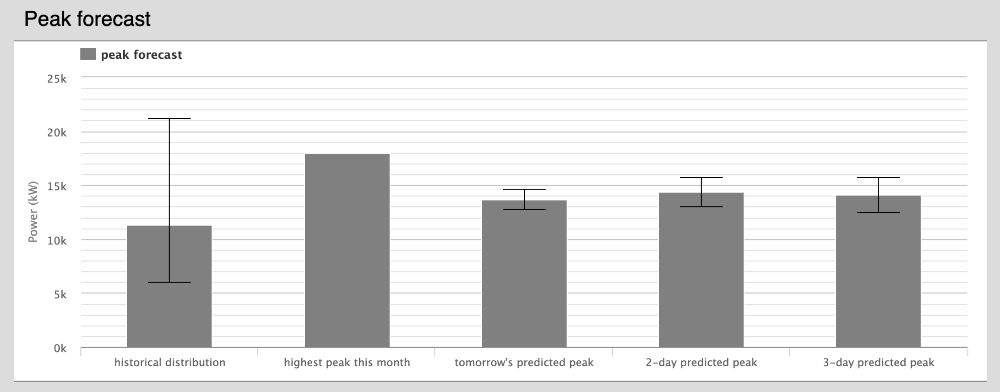
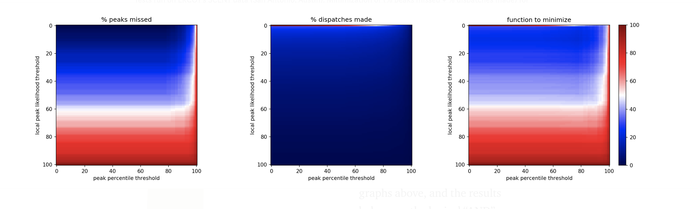
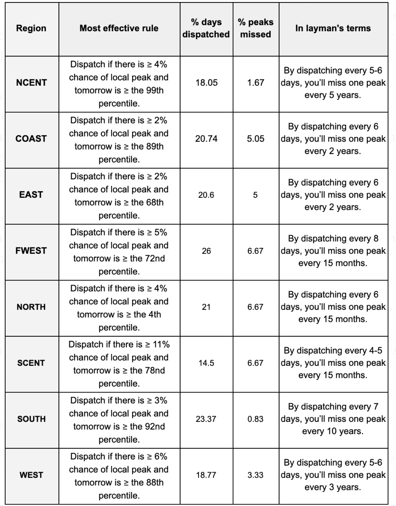
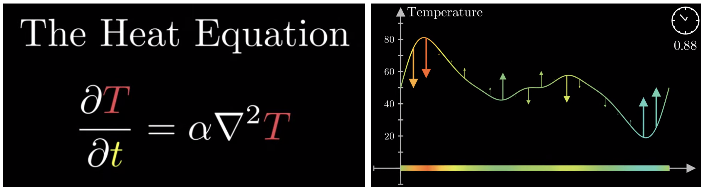
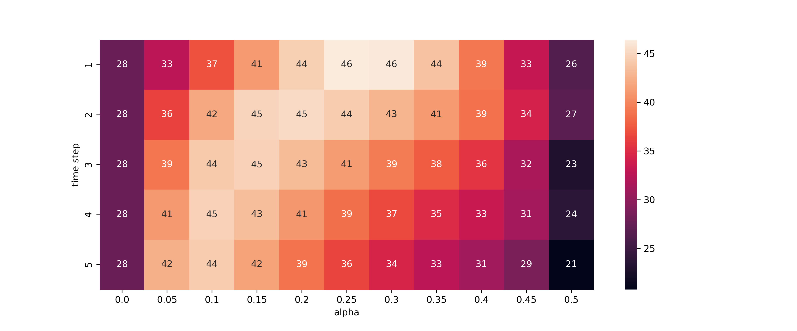
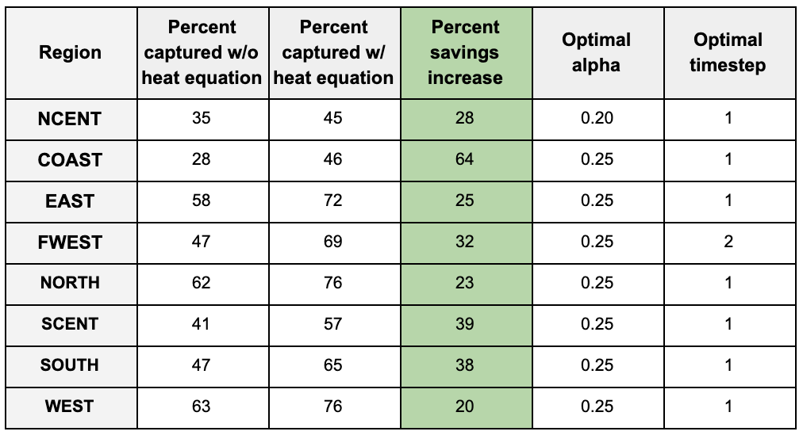

In conjunction with the Open Modeling Framework (OMF).
Originally posted in Towards Data Science.
Explore the rest of the site to view more projects.

Electricity distributors stand to save hundreds of thousands of dollars by decreasing their peak demand charge. Some have tried to discharge batteries or turn off customers’ water heaters or air conditioners at peak hours to reduce their demand. But these efforts are only as effective as the utility’s ability to predict the day’s energy consumption.
The smallest inaccuracy can mean the difference between tens of thousands of dollars—implementing a peak-shaving strategy with incorrect load predictions can even increase demand cost. Thankfully, advances in deep learning and neural networks can offer utilities an incredibly accurate picture of the next day’s energy consumption. The Open Modeling Framework (OMF) and I have used neural networks to create a day-ahead load forecasting model that can be easily implemented to inform dispatch decisions.
We initially created a linear regression model with the python package sci-kit learn. Although this simpler model achieved 10 mean absolute percent error (MAPE), it was not accurate enough to reduce peaks reliably.
The biggest obstacle was the difference in daily peaks between winter and summer months. Winter months peaked twice a day and summer months peaked in the middle of the day. A linear model cannot create these two daily load shapes at the same time. While linear regression can find simple relationships (+500kW because it’s Monday, -100kW because it’s March), a neural network can calculate more complicated relationships (+5100kW because it’s 3pm on a Monday in April, -1500kW because it’s 5am on Thanksgiving). This reduced our training error to roughly 3.5 MAPE, which translated to tens of thousands of dollars saved.

In order to incorporate the load forecast software into the OMF database, our model is written in Python. We use the pandas package to manipulate data, and we have implemented Tensorflow’s Keras (Google’s machine learning software) to create a neural network. Here is a link to the repository. The code is easy to use:
import loadForecast as fc import pandas as pd df = pd.read_csv("test.csv") all_X = fc.makeUsefulDf(df) all_y = df["load"] predictions, accuracy = fc.neural_net_predictions(all_X, all_y)
For our initial testing purposes, neural_net_predictions simply returns the predictions for the final year; however, it can be quickly updated to work for a utility in real-time.
The structure of the neural network is continually being updated as we search for more accurate and efficient methods; however, we have currently settled on a five-layer, fully-connected network where each layer contains 71 nodes. We use a ReLU function in each layer and are minimizing mean squared error.
We recommend that the model train on at least three years of data. The model takes a CSV as input, where each row lists the load and weather for a given year, month, day, and hour. If a utility doesn’t have temperature data available, OMF also offers “weatherPull,” a program that can easily collect and return hourly weather for a given zip code. If there are any null temperature values, the load forecast function uses the “forward fill” method, where null values are replaced by the last non-null value. For example, “38, 39, 41, NaN, NaN, 38, NaN, 32” would be read as “38, 39, 41, 41, 41, 38, 38, 32.”
Although each training example contains the date, temperature, and weather data, we expand these three columns into 72 features that are useful for a machine learning model. Here is a list of all features:
* These features are normalized by subtracting from the mean and dividing by the standard deviation, which helps collect all data points closely around zero. By dividing by the standard deviation instead of the range (as some data scientists suggest), we improved accuracy by one percent.
** The National Weather Service estimates that their day-ahead hourly weather forecast is often within 2.5 degrees. To replicate this, we create noise in the training and test temperature data by adding a gaussian distribution centered at zero with the standard deviation of 2.5. When this noise was added, the accuracy of the model dropped by one percent.
*** If you graph load against temperature, you’ll see that load is proportional to temperature²—heaters are used in the coldest temperatures and air conditioners in the hottest temperatures. By adding a temperature² feature, we can make this relationship more obvious to the model.
**** Observed holidays are also “1” (or “True”). For example, Independence Day 2015 was on a Saturday, so it was observed on Friday, July 3. Both July 3 and July 4 for 2015 are marked as “1” for the “isIndependenceDay” feature.
We trained this neural net on ERCOT’s Houston data from 2002–2017 and tested the model against the load for 2018. We achieved roughly 96.5 percent accuracy (3.5 MAPE). The entire program often runs within 10 minutes. We deployed this neural net on a demand reduction model with a utility using batteries to shift load to reduce demand and found that we saved 40 percent of the optimal solution (e.g. if everything ran perfectly, the utility would save $95,000 on demand charge, but because forecasting isn’t perfect, it saved approximately $40,000. This assumes the typical $20/kW demand charge. Demand charge, among other values, is an input to our cost-benefit model, and we’re in process of extending these results to other utilities.)
There are more complicated machine learning structures that we are currently pursuing, given that the smallest improvements can have such a profound effect on a utility’s bottom line.
Also, it costs money to charge and discharge these large batteries, and some utilities can control their customers’ air conditioners a limited number of days. The next step in our research is to best predict what day of the month to dispatch these methods (assuming the demand charge is monthly), so that utilities can be as conservative as possible.

In early 2019, we built a deep learning model that predicted electric consumption on an hour-by-hour basis. Because the smallest error can cost an electric utility tens of thousands of dollars, we explored a number of more complex forecasters. In the end we discovered that a simple day-long approach is the most effective, often cutting error in half.

In our previous model, we input all features we believed were relevant to a given hour's load: date, weather data, etc. A neural network then output that single hour's load prediction. This was repeated 72 times to give a 3-day forecast. For a more in-depth explanation, consider reading the original blog post.
The new structure effectively combines 24 hourly models. But instead of calculating a single hour, we combine all weights into one flat, fully-connected dense layer (we settled on approx. 900 nodes). That layer is then fully connected to a 24-hour vector. We then repeat that over 3-days to give a 72-hour forecast.
The main takeaway should be that the different hours "inform" each other. In our old model, we had a very direct method: given all these factors, what's this single hour's forecast? But in our new model, we can have all the factors that contribute to 4pm's load prediction influence 5pm's load prediction. If it's 30 degrees at 6am, shouldn't that effect whether heaters are still going by 9am? The neural network can identify these complex correlations and provide a more informed prediction.
Correctly preparing three-dimensional training data can be tricky. Here is the less-than-elegant function to appropriately group data to the dimensions needed.
def data_transform(data, timesteps, var='x'): m = [] s = data.to_numpy() for i in range(s.shape[0]-timesteps): m.append(s[i:i+timesteps].tolist()) if var == 'x': t = np.zeros((len(m), len(m[0]), len(m[0][0]))) for i, x in enumerate(m): for j, y in enumerate(x): for k, z in enumerate(y): t[i, j, k] = z else: t = np.zeros((len(m), len(m[0]))) for i, x in enumerate(m): for j, y in enumerate(x): t[i, j] = y return t all_y_rnn = data_transform(all_y, HOURS_AHEAD, var='y') all_X_rnn = data_transform(all_X, HOURS_AHEAD, var='x')
It is then fed into the following network:
HOURS_AHEAD = 24 s = all_X.shape[1] model = tf.keras.Sequential() model.add(layers.Dense(s, activation=tf.nn.relu, input_shape=(HOURS_AHEAD, all_X.shape[1]))) model.add(layers.Dense(s, activation=tf.nn.relu)) model.add(layers.Dense(s, activation=tf.nn.relu)) model.add(layers.Dense(s, activation=tf.nn.relu)) model.add(layers.Dense(s, activation=tf.nn.relu)) model.add(layers.Flatten()) model.add(layers.Dense(all_X.shape[1]*HOURS_AHEAD//2, activation=tf.nn.relu)) model.add(layers.Dense(HOURS_AHEAD)) nadam = tf.keras.optimizers.Nadam(learning_rate=0.002, beta_1=0.9, beta_2=0.999) model.compile(optimizer=nadam, loss='mape')
A recurrent neural network, or RNN, would operate similarly to the network outlined above. But our testing with LSTMs and GRUs (two of the most popular RNN models) was unsuccessful. We were unable to produce models that outcompeted our simplest, hour-by-hour structure. In short, a traditional RNN structure seemed to make things worse.
In our short-term forecasting analysis, we often care about load in three-day increments (predictions further out quickly become useless). So why not train on a 72-hour vector? We technically can, but the costs don't outweigh the benefits. On our 24-hour prediction, the daily model runs three times slower than the hourly model, but the returns (as we'll see below) are very high. But as we increase to 48 or 72-hour predictions, the model severely slows with little improvement. At least for our purposes, it is better to separately train three, 24-hour models.
We tested the new model on Texas's "North Central" region. The data can be found here. While in reality the model would train daily, these models were strictly trained on the first 16 years of data (2002–2017) and tested on the final year (2018). To simulate weather forecasting uncertainty, we've added noise to historical weather data-Gaussian distributions with standard distributions of 2.5, 4, and 6 degrees for the 24, 48, and 72 hour groupings respectively.
The new model has a mean absolute percent error (MAPE) of 3 while the old model has a MAPE of 4 for the first 24 hours. But the hour-by-hour results are far more compelling.
The most significant issue is not only the MAPE, but the spread of errors (represented below as the interquartile range, or IQR). In developing our first model we discovered that when our hour-by-hour model was wrong, it was often *very* wrong. The reduced variance in the new model can help us communicate our uncertainty more confidently to utilities.

And most importantly, the money saved! A 1 percentage point decrease in error may seem insignificant, but in 2018, this would have doubled Texas's peak shaving savings.
Assuming batteries with a 700kW charge and 500kW rating, we can calculate how much peak shaving could occur with perfect forecasting. You can capture 36 percent of optimal with our hourly neural network model. And by substituting the new model (no fancy optimization under uncertainty analysis included), we are able to capture 64 percent, almost doubling our savings!
We were unable to develop a proper RNN that outcompeted our model, but that doesn't mean that one doesn't exist. The smallest increase in accuracy can profoundly help electric utilities, so if you think there's a structure we haven't considered, feel free to reach out!
For electric utilities, reducing monthly demand charge can be hugely profitable. Implementing a peak shaving strategy every day, however, could be costly. If a utility is using direct load control (paying customers to turn off air conditioners, water heaters, etc.), they may frustrate customers if they do so too frequently. If a utility uses storage, overuse can force them to replace expensive batteries more often than necessary. Therefore, it’s not only important to predict the load shape for the next day, but also to predict the month’s peak. In an ideal world, a utility with a monthly demand charge would need to shave peaks one day a month.
Unfortunately, similar to the weather predictions, load predictions get unreliable after a few days. Past three-day forecasts, our predictions level out at 10 mean absolute percent error (MAPE). And since it’s not uncommon for an entire month’s daily peaks to fall within a 10 MAPE band, finding monthly peaks quickly becomes guesswork.
Thankfully, by combining a few statistical techniques, we can place tomorrow’s forecast in context and dramatically reduce the number of days we dispatch.
We’re motivated by a single question: is tomorrow this month’s peak?
We know that we can’t have a 30-day forecast, but by looking at three-day predictions, what’s already happened this month, and historical peaks, we can answer two smaller questions:
In the end, we’ll combine the answers to inform our motivating question.
A “local peak” would mean that tomorrow is the highest in a three-day forecast and also higher than any load already seen this month. In the beta version our web application, this is how it is represented:
Above is a forecast for the 20th of December in the north central region of Texas in 2018. Because “tomorrow’s predicted peak” is considerably lower than the highest peak seen so far, a utility would not implement a peak shaving strategy on December 20th.
Considering that the model’s prediction is likely accurate around a normal distribution, we can assign a number to the statistical likelihood that tomorrow will be a local peak. It’s given by this formula:
If you’re interested in the details, here’s a link to a full explanation. And below is how we expand that formula and translate it into python:
from scipy.stats import norm def peak_likelihood(hist=None, tomorrow=None, tomorrow_std=None, two_day=None, two_day_std=None, three_day=None, three_day_std=None): ''' Given the predictions and standard deviation of the three-day forecast, in addition to the highest load so far this month, what is the likelihood that a sample from tomorrow's distribution will be higher than the other three. ''' # likelihood that tomorrow is lower than highest so far this month A = norm(tomorrow, tomorrow_std).cdf(hist) # likelihood that tomorrow is lower than than the two-day forecast B = norm(0, 1).cdf(-(tomorrow - two_day) / ((tomorrow_std**2 + two_day_std**2)**.5)) # likelihood that tomorrow is lower than than the three-day forecast C = norm(0, 1).cdf(-(tomorrow - three_day) / ((tomorrow_std**2 + three_day_std**2)**.5)) # likelihood tomorrow is (not A) AND (not B) AND (not C) # in other words, what's the likelihood that tomorrow is local peak return round((1 - A)*(1 - B)*(1 - C)*100, 2)
Using the example from December 20th and rounding to two decimals, the “local peak likelihood” for tomorrow is 0.0%, mostly because the area under the normal distribution for tomorrow’s peak is very small above the highest peak so far.
This question is simpler to answer. We look at the monthly data from previous years, and calculate the percentile of tomorrow’s prediction. It’s important to note that we’re calculating percentile with daily peaks, not hourly load.
We have two factors, “local peak likelihood” and “peak percentile”, and we want to make a rule that will minimize two results, “percent of peaks missed” and “percent of dispatches made.”
These two results are tradeoffs that each utility must make. If they want to ensure that every peak is captured (low percent of peaks missed), they must dispatch every day (high percent of dispatches made). And vice versa: if they want to be conservative with the number of dispatches, they run the risk of missing a peak.
We need a single target to minimize. So for our purposes, we’ll simply add the two objectives. In the heat maps below, the function to minimize (right), is simply the sum of the other two. Naturally, considering a utility’s priorities, they would weigh this optimization function differently. Since there’s also a monetary aspect to this, a proper cost-benefit analysis would be necessary. But those calculations are unique to each utility.
I ran tests on ERCOT data from the various regions of Texas from 2002 to 2018. I ran the program from 2008 to 2018 so that the “peak percentile” variable had some hindsight. The entire testing process can be found in this jupyter notebook.
I assumed that we had 97% accuracy for one-day forecasts, 95% accuracy for two-day forecasts, and 92% accuracy for three-day forecasts — results that are found commonly in academic literature and also reflected in our own testing.
Above is one example from the south central region of Texas. Note that there is a sharp line across the top of the center heat map. More than half of all daily peaks have a 0 percent chance of being a local peak, suggesting that regardless of the optimization method put in place by utilities, this method will immediately cut dispatches in half while rarely missing a peak. This band was revealed in all regions of Texas where this test was performed.
It’s important to note that the graphs above, and the results below use the logical “AND” when creating the dispatch rule (e.g. Dispatch if there is ≥ 4% chance of local peak AND tomorrow is ≥ the 99th percentile.) I also tested the logical “OR”, but results where consistently worse.
The results are tabulated in the figure below. Note that each of these “rules” are only accurate in hindsight. Each utility would need to test how effective previous policies can be implemented on future loads. As one might expect, there is no one-rule-fits-all when trying to predict monthly peaks. The consistent trend, however, is to dispatch if there is a greater-than single digit chance of a local peak, and if the forecast’s percentile is pretty high. (The results for NORTH are quite different than the rest of Texas, here is a link to its heat map.)
The results suggest that the “local peak likelihood” variable is doing most of the heavy lifting in this function, and the percentile factor is helping detect obvious non-peaks in a historical context.
It’s not lost on me that this optimization could also be aided by breaking down rules for each month, or even applying some kind of machine learning algorithm; however, because future load behavior can differ from the past based on changing technology and consumption patterns, those processes can easily fall victim to overfitting.
There is a great opportunity, however, for utilities to leverage machine learning and basic statistics to better inform their dispatch decisions, saving money and building customer trust in the process.

Even the best models for predicting energy consumption aren’t good enough to capture a majority of the possible value of peak shaving. When a forecast has just 3% error, it’s not unusual to lose half of possible savings as a consequence. Consider how the smallest inaccuracies dramatically affect these utilities’ expected savings from peak shaving (testing here):
With this in mind, it’s important to consider what kind of dispatch strategies utilities should deploy when factoring in the uncertainty surrounding the following day’s load prediction. Thankfully, we can use one equation to plan for that uncertainty, hedge our bets, and regain some of the value lost in imperfect predictions.
The 3D heat equation is shown below. 3Blue1Brown’s introduction to this topic served as the inspiration to this approach. For our purposes, all you need to know is that the heat equation is a convenient function to flatten curves while the area under the curve remains constant. We want to spread out our dispatches while still using all the resources available to us.
Consider a forecast for tomorrow’s load curve. We know that it’s generally right, to about 3 mean absolute percent error. We can’t put all of our eggs into one basket (i.e. put all of our battery dispatch into one hour). We calculate what’s the ideal storage dispatch on the forecasted load, and then apply the heat equation to spread out to nearby hours. This ensures that the smallest forecast error doesn’t lead to a significant drop in savings.
Here is the heat equation translated into python, and its effect on a storage dispatch:
def heat(l, alpha, time_steps): '''apply the heat equation to list l, given constants alpha and time_steps''' return_l = [] for t in range(time_steps): if len(return_l) != 0: l = return_l return_l = [] for i, x in enumerate(l): if i == 0: diff = (0 - l[i]) - (l[i] - l[i+1]) return_l.append(l[i] + alpha*diff) elif i == len(l) - 1: diff = (l[i-1] - l[i]) - (l[i] - 0) return_l.append(l[i] + alpha*diff) else: diff = (l[i-1] - l[i]) - (l[i] - l[i+1]) return_l.append(l[i] + alpha*diff) # proportionally correct if boundaries hit, then return new list sum_r, sum_l = sum(return_l), sum(l) return [round((sum_l / sum_r)*x, 4) for x in return_l] if sum_l != sum_r else return_l
The biggest mistake a utility can make is to attempt to charge a battery at the wrong time. In the numerous models that I’ve tested, batteries recharging mid-day have consistently increased the month’s peak. For this reason, it’s best to always play it safe and always charge when consumption is at an absolute low. From what I’ve gathered, this insurance strategy loses only about 1–2% of the optimal possible value captured, and is well worth it, at least until forecast prediction software gets considerably better.
In order to make the dispatch decisions, we use the linear programming python package puLP . The details of the package can be found here — it’s very useful for any kind of operations research. We state an objective function like “minimize the maximum load” while providing the battery’s limitations.
I tested how the heat equation would impact revenue across the eight ERCOT regions of Texas from 2002 to 2018. To simulate prediction accuracy, I added a normal distribution of noise with 3% standard deviation around the load. I assumed that we had 700kW of storage, where a maximum of 500kW can be dispatched per hour. The functions and testing can be found in this jupyter notebook.
It’s important to clarify that tests were performed on every day’s peak to gather a larger sample. I rely on the assumption that there’s not a significant difference between monthly peaks and daily peaks.
The heat map above shows the percent of optimal value gained when various values of alpha and time step are applied. In ERCOT’s coastal region, if the heat equation is not applied, utilities would gather 28% of optimal peak shaving value. If heat equation is appropriately applied, they capture 46% of optimal.The results for each region of Texas is tabulated below. Every region could be helped by applying this spreading formula. This formula would increase savings anywhere from 20% to 64%.
Furthermore, the constants that maximize savings are relatively similar for each region, suggesting that these constants are relatively stable over time and generalizable, though naturally, each utility would have to perform an independent analysis before applying them themselves.
A quick analysis on the NCENT region of Texas revealed that even with 99% accuracy, applying the heat equation would still improve savings. Until our prediction capabilities are as perfect as random effects allow, optimization formulas that take our uncertainty into consideration should be applied and perfected.